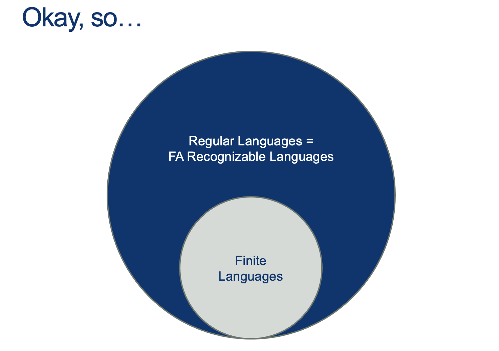
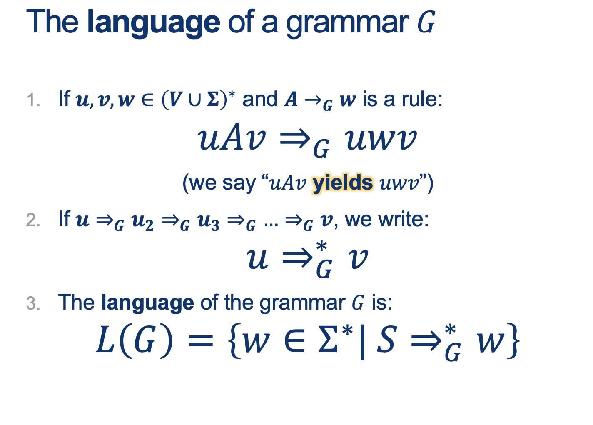

Lecture Notes 12: Context-Free Grammars
Outline
This class we'll discuss:
- Perspectives on simple machines
- Properties of Regular Languages
- Looking ahead: Context-Free Grammars
- CFG examples
Intro: Context-Free Grammar

EQ, HALF, PAL


Finite automata and regular expressions are limited
They both only match patterns that can be described by reaching L to R
Some patterns are more interesting…

Seems like PAL lives really close to Regular: there’s a structure to the words that’s ALMOST regular… but the pattern is in the middle.





How about EQ?
In the following map...
- Where are CFGs?
- How would we represent a finite language with a CFG?
- How would we represent a regular language with a CFG?
- Is there something outside a CFG?
- Where is EQ?
Ideas to prove all RL's are "inside" CFGs
(You suggest some:)

Tip for designing Context-Free-Languages
Many CFLs are the union of simpler CFLs. If you must construct a CFG for a CFL that you can break into simpler pieces, do so and then construct individual grammars for each piece.
Example:
If the objective is to design a grammar for \( \{0^n1^n \mid n>0 \} \cup \{1^n0^1 \mid n>0 \}\), start with two sub-languages using sub-"starting symbols" and then join them to get the target language starting at \(S\)
You can build:
\(S_1 = 0S1 \mid \epsilon \)
and
\(S_2 = 1S0 \mid \epsilon\), :
And then join them to obtain:
\[
\begin{alignat}{2}
S &= S_1 \mid S_2 \\
S_1 &= 0S1 \mid \epsilon \\
S_2 &= 1S0 \mid \epsilon
\end{alignat}
\]
So now, how would we "Build" a Regular Language using a CFG?


Approach 2: RL's are a special case of CFLs
You can convert any DFA into an equivalent CFG as follows.
- Make a variable \(S_i\) for each state \(q_i\) of the DFA.
- Add the rule \(S_i\) → \(aS_j\) to the CFG if \(\delta (q_i,a) = q_j\) is a transition in the DFA.
- Add the rule \(S_i\) → ε if qi is an accept state of the DFA.
- Make \(S_0\) the start variable of the grammar, where \(q_0\) is the start state of the machine.
Verify on your own that the resulting CFG generates the same language that the DFA recognizes.
Activity 1 [2 minutes]:
Try to build your own CFG. One that "Accepts" the language:
\[ L = \{ w \in \Sigma^* \vert w \ has \ an \ odd \ number \ of \ 1s \}\]
(Wait; then Click)

if A is \(S_0\) and B is \(S_1\):
\[
\begin{alignat}{2}
S &\rightarrow_g S_0 \\
S_0 &\rightarrow_g 0S_0 \\
S_0 &\rightarrow_g 1S_1 \\
S_1 &\rightarrow_g \epsilon \\
S_1 &\rightarrow_g 0S_1 \\
S_1 &\rightarrow_g 1S_0 \\
\end{alignat}
\]

How do we prove there are languages that are NOT (beyond) CFLs?
How did we do this back when we did it for RLs?

- the middle part is not too big
- v and y (the repeating parts) are not both simultaneously empty
- repeating v and or y we will keep us in the language
Note that RLs are a special case of Context-Free-Languages (without the \(uv^i\)) part.
So, if we have a pumping lemma for CFGs, is there a "Machine" equivalent to the Finite Automatons as well?
We'll see those next class.
Proving a language is NOT context-free

What does your untuition say? Is it a CFL?

Remember:
- Given a structure of \(w = uvxyz\), and \( \mid vy \mid \geq 1\)
- We want to find an \(i\) for which a word \(uv^ixy^iz\)
does not have a prime length ( \( \mid uv^ixy^iz \mid \) is not prime ) after being "pumped" some number of times.
- Here, we can start with a word \(w\) with length \(p\geq N \) (\(N\) provided by the pumping Lemma)
- Now, the trick is to pump the pattern some number of times so that we can prove that the final length is NOT prime!
- Ideas?
(Wait; then Click)
Steps:
- The length of a word \(\mid uv^ixy^iz \mid \)
is the length of \( \mid w \mid \) plus any added repetitions of \(v\) and \(y\)
- So, \( \mid uv^ixy^iz \mid \) is \( \mid w\mid + (i-1)\mid vy \mid \)
- Since we said \(w\) is in PRIMEAL, then \( \mid w\mid \) is some prime number \(p\geq N \).
- Then, \( \mid uv^ixy^iz \mid = \mid w\mid + (i-1)\mid vy \mid = p + (i-1)\mid vy \mid\)
- Now, What possible choice of \(i\) could we choose to cause the overall length to be provably NOT prime?
(Wait; then Click)
If we choose \(i\) so that the \(i-1\) is equal to \(p\) in the following expression:
\[ \mid uv^ixy^iz \mid = \mid w\mid + (i-1)\mid vy \mid = p + (i-1)\mid vy \mid \]
Then substituting \(i-1\) for \(p\) ( by making \(i = p-1\)), we would get:
\[
\mid uv^ixy^iz \mid = \mid w \mid + (i-1)\mid vy \mid = p + p\mid vy \mid \\
= p (1+\mid vy \mid)
\]
which means that, after pumping, the word is divisible by \(p\)! and therefore, not of prime length.
Why are CFGs important?

check the article out: https://www.nature.com/articles/nature04675
Next class: Push-Down Automata
Homework
[Due for everyone]
problem Set 3 due Friday 02/25 at 5PM.
[Optional]
TODO